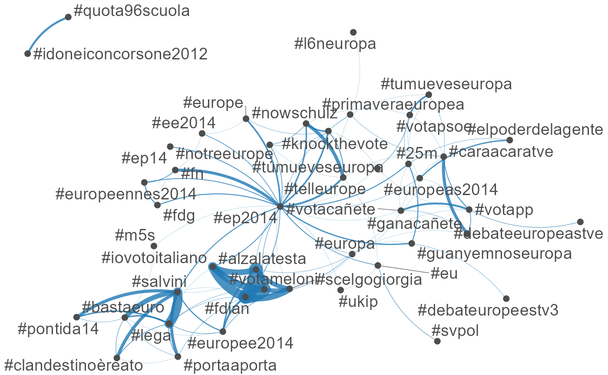
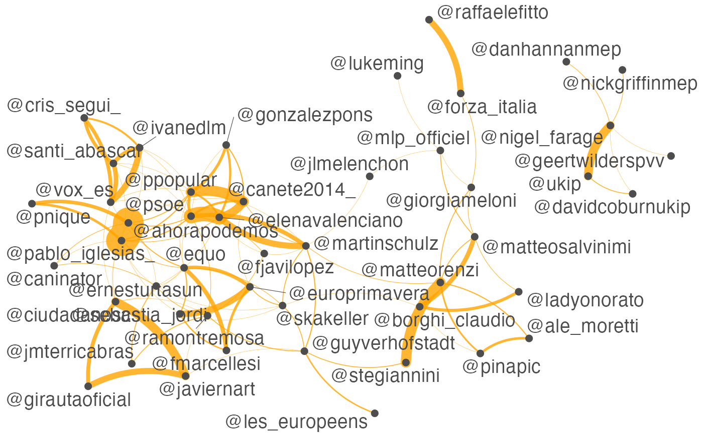

Example: Social media analysis (X formerly Twitter)
Kohei Watanabe
Source:vignettes/pkgdown/examples/twitter.Rmd
twitter.RmdUsing quanteda’s fcm() and
textplot_network(), you can perform visual analysis of
social media posts in terms of co-occurrences of hashtags or usernames
in a few steps. The dataset for this example contains only 10,000
Twitter posts, but you can easily analyse more than one million posts on
your laptop computer.
Load sample data
load("data/data_corpus_tweets.rda")Construct a document-feature matrix of Twitter posts
dfmat_tweets <- tokens(data_corpus_tweets, remove_punct = TRUE) |>
dfm()
head(dfmat_tweets)
## Document-feature matrix of: 6 documents, 42,239 features (99.97% sparse) and 34
## docvars.
## features
## docs oggi pomeriggio a partire dalle 18.00 interverrò #pomeriggio5 su
## tweet1 1 1 2 1 1 1 1 1 1
## tweet2 0 0 1 0 0 0 0 0 0
## tweet3 0 0 0 0 0 0 0 0 0
## tweet4 0 0 0 0 0 0 0 0 0
## tweet5 0 0 0 0 0 0 0 0 0
## tweet6 0 0 0 0 0 0 0 0 0
## features
## docs #canale5
## tweet1 1
## tweet2 0
## tweet3 0
## tweet4 0
## tweet5 0
## tweet6 0
## [ reached max_nfeat ... 42,229 more features ]Hashtags
Extract most common hashtags
dfmat_tag <- dfm_select(dfmat_tweets, pattern = "#*")
toptag <- names(topfeatures(dfmat_tag, 50))
head(toptag)
## [1] "#ep2014" "#salvini" "#fdian" "#ukip"
## [5] "#caraacaratve" "#alzalatesta"Construct feature-occurrence matrix of hashtags
library("quanteda.textplots")
fcmat_tag <- fcm(dfmat_tag)
head(fcmat_tag)
## Feature co-occurrence matrix of: 6 by 2,781 features.
## features
## features #pomeriggio5 #canale5 #miaou #iovotoitaliano #fdian #pp
## #pomeriggio5 0 2 0 0 0 0
## #canale5 0 0 0 0 1 0
## #miaou 0 0 0 0 0 0
## #iovotoitaliano 0 0 0 0 60 0
## #fdian 0 0 0 0 0 0
## #pp 0 0 0 0 0 0
## features
## features #espanyaensroba #bravo #primaveraeuropea #dpdabayrou
## #pomeriggio5 0 0 0 0
## #canale5 0 0 0 0
## #miaou 0 0 0 0
## #iovotoitaliano 0 0 0 0
## #fdian 0 0 0 0
## #pp 1 1 0 0
## [ reached max_nfeat ... 2,771 more features ]
fcmat_topgat <- fcm_select(fcmat_tag, pattern = toptag)
textplot_network(fcmat_topgat, min_freq = 0.1, edge_alpha = 0.8, edge_size = 5)
Usernames
Extract most frequently mentioned usernames
dfmtat_users <- dfm_select(dfmat_tweets, pattern = "@*")
topuser <- names(topfeatures(dfmtat_users, 50))
head(topuser)
## [1] "@pablo_iglesias_" "@elenavalenciano" "@canete2014_" "@nigel_farage"
## [5] "@martinschulz" "@mlp_officiel"Construct feature-occurrence matrix of usernames
fcmat_users <- fcm(dfmtat_users)
head(fcmat_users)
## Feature co-occurrence matrix of: 6 by 5,963 features.
## features
## features @pacomarhuenda @pablo_iglesias_ @kopriths @gapatzhs
## @pacomarhuenda 0 1 0 0
## @pablo_iglesias_ 0 0 0 0
## @kopriths 0 0 0 1
## @gapatzhs 0 0 0 0
## @mariaspyraki 0 0 0 0
## @ernesturtasun 0 0 0 0
## features
## features @mariaspyraki @ernesturtasun @gabrielamard @nigel_farage
## @pacomarhuenda 0 0 0 0
## @pablo_iglesias_ 0 1 0 0
## @kopriths 1 0 0 0
## @gapatzhs 1 0 0 0
## @mariaspyraki 0 0 0 0
## @ernesturtasun 0 0 0 0
## features
## features @ukip @youtube
## @pacomarhuenda 0 0
## @pablo_iglesias_ 0 0
## @kopriths 0 0
## @gapatzhs 0 0
## @mariaspyraki 0 0
## @ernesturtasun 0 0
## [ reached max_nfeat ... 5,953 more features ]
fcmat_users <- fcm_select(fcmat_users, pattern = topuser)
textplot_network(fcmat_users, min_freq = 0.1, edge_color = "orange", edge_alpha = 0.8, edge_size = 5)